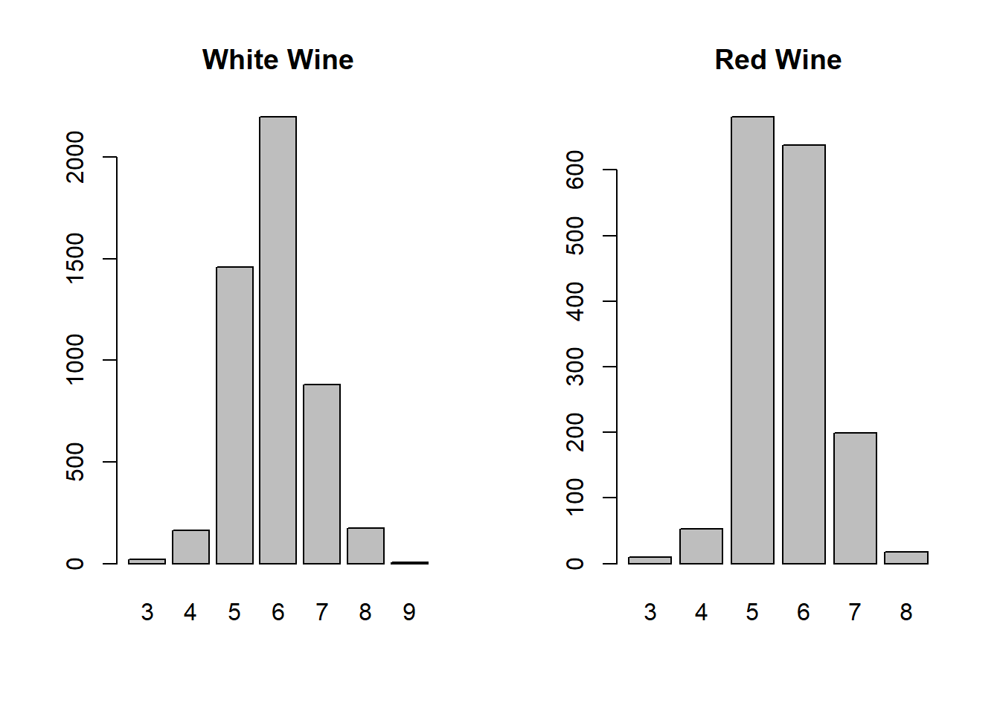
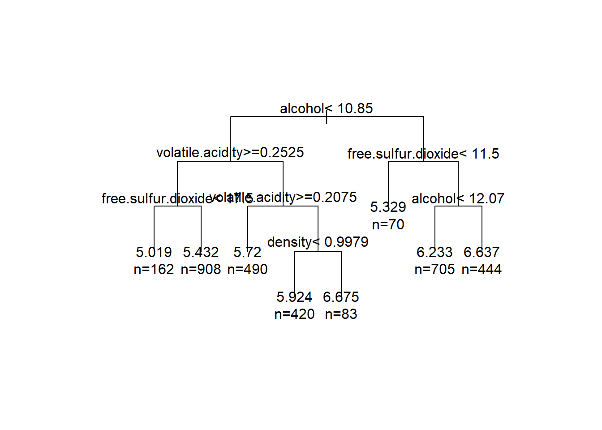
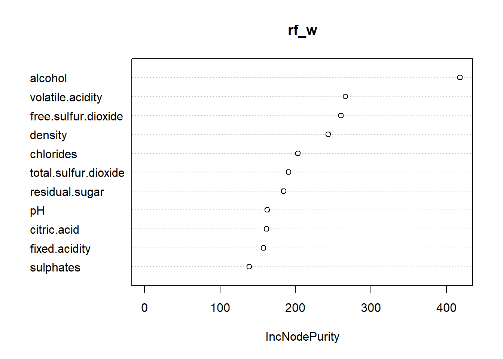
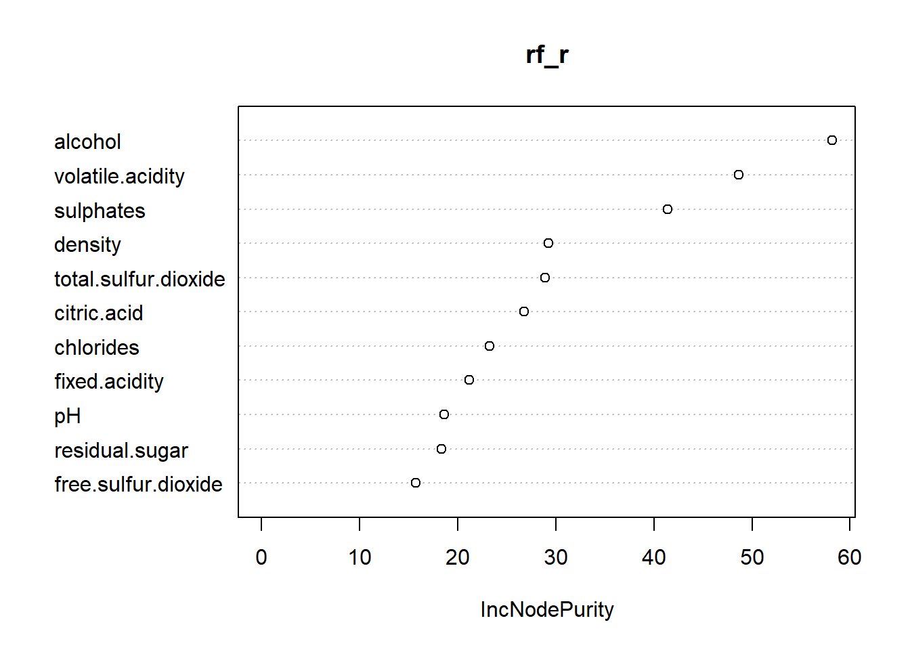

library(corrplot)
library(ipred)
library(randomForest)
library(rpart)
library(tree)
library(SDMTools)
library(formattable)
redwine = read.csv("C:/Users/mitch/Documents/portfolio/data/winequality-red.csv", header = TRUE, sep = ";")
whitewine = read.csv("C:/Users/mitch/Documents/portfolio/data/winequality-white.csv", header = TRUE, sep = ";")
whitewine2 = read.csv("C:/Users/mitch/Documents/portfolio/data/winequality-white.csv", header = TRUE, sep = ";")
whitewine$gba = ifelse(whitewine$quality<5,"bad",ifelse(whitewine$quality>6,"good","average"))
whitewine$gba = factor(whitewine$gba)
set.seed(33)
train_white = sample(1:4898, 1616)
train_red = sample(1:1599,1066)Our goal is to model wine quality so lets take a look at that variable for both datasets. After looking at what wine reviewers look for found that alcohol and volatile acidity may be important
par(mfrow=c(1,2))
counts = table(whitewine$quality)
barplot(counts, main = "White Wine")
counts2 = table(redwine$quality)
barplot(counts2, main = "Red Wine")
correlations_w = cor(whitewine2[-12], whitewine2$quality)
correlations_w## [,1]
## fixed.acidity -0.113662831
## volatile.acidity -0.194722969
## citric.acid -0.009209091
## residual.sugar -0.097576829
## chlorides -0.209934411
## free.sulfur.dioxide 0.008158067
## total.sulfur.dioxide -0.174737218
## density -0.307123313
## pH 0.099427246
## sulphates 0.053677877
## alcohol 0.435574715correlations_r = cor(redwine[-12], redwine$quality)
correlations_r## [,1]
## fixed.acidity 0.12405165
## volatile.acidity -0.39055778
## citric.acid 0.22637251
## residual.sugar 0.01373164
## chlorides -0.12890656
## free.sulfur.dioxide -0.05065606
## total.sulfur.dioxide -0.18510029
## density -0.17491923
## pH -0.05773139
## sulphates 0.25139708
## alcohol 0.47616632var(whitewine$quality)## [1] 0.7843557var(redwine$quality)## [1] 0.6521684df = data.frame(correlations_w, correlations_r)
colnames(df) = c("white wine", "red wine")
df## white wine red wine
## fixed.acidity -0.113662831 0.12405165
## volatile.acidity -0.194722969 -0.39055778
## citric.acid -0.009209091 0.22637251
## residual.sugar -0.097576829 0.01373164
## chlorides -0.209934411 -0.12890656
## free.sulfur.dioxide 0.008158067 -0.05065606
## total.sulfur.dioxide -0.174737218 -0.18510029
## density -0.307123313 -0.17491923
## pH 0.099427246 -0.05773139
## sulphates 0.053677877 0.25139708
## alcohol 0.435574715 0.47616632my.control <- rpart.control(cp=0, xval=10)
fit1<- rpart(quality~., data=whitewine2[-train_white,], method="anova", control=my.control)
#printcp(fit1)
tree11 <-prune(fit1,cp=.009)
plot(tree11,uniform=T, margin=0.2)
text(tree11,use.n=T)
#whitewine$quality = factor(whitewine$quality)
#pred_w = round(predict(fit1, whitewine[train_white,]))
#df1 = data.frame(pred_w,whitewine[train_white,]$quality)
#table(data.frame(pred_w,whitewine[train_white,]$quality))
#df1$acc = rep(0,1616)
##mean(df1$acc)rf_w = randomForest(quality~.,data=whitewine2[-train_white,], ntree=100, norm.votes=F)
print(rf_w)##
## Call:
## randomForest(formula = quality ~ ., data = whitewine2[-train_white, ], ntree = 100, norm.votes = F)
## Type of random forest: regression
## Number of trees: 100
## No. of variables tried at each split: 3
##
## Mean of squared residuals: 0.3823454
## % Var explained: 50.17whitewine2$quality = factor(whitewine2$quality)
pred_w = round(predict(rf_w, whitewine2[train_white,]))
df1 = data.frame(pred_w,whitewine2[train_white,]$quality)
table(data.frame(pred_w,whitewine2[train_white,]$quality))## whitewine2.train_white....quality
## pred_w 3 4 5 6 7 8 9
## 4 0 1 0 0 0 0 0
## 5 6 38 312 86 2 0 0
## 6 3 12 185 559 139 20 0
## 7 0 1 5 51 152 36 2
## 8 0 0 0 0 0 6 0df1$acc = rep(0,1616)
df1$acc = as.numeric(df1$pred_w == df1$whitewine2.train_white....quality)
mean(df1$acc)## [1] 0.6373762varImpPlot(rf_w)
rf_w_gba = randomForest(gba~.-quality,data=whitewine[-train_white,], ntree=100, norm.votes=F)
print(rf_w_gba)##
## Call:
## randomForest(formula = gba ~ . - quality, data = whitewine[-train_white, ], ntree = 100, norm.votes = F)
## Type of random forest: classification
## Number of trees: 100
## No. of variables tried at each split: 3
##
## OOB estimate of error rate: 16.3%
## Confusion matrix:
## average bad good class.error
## average 2335 7 115 0.04965405
## bad 103 16 3 0.86885246
## good 307 0 396 0.43669986pred_w = predict(rf_w_gba, whitewine[train_white,])
table(pred_w,whitewine[train_white,]$gba)##
## pred_w average bad good
## average 1144 50 156
## bad 4 9 0
## good 50 2 201df2 = data.frame(pred_w,whitewine[train_white,]$gba)
df2$acc = as.numeric(df2$pred_w == df2$whitewine.train_white....gba)
mean(df2$acc)## [1] 0.8378713rf_r = randomForest(quality~.,data=redwine[-train_red,], ntree=100, norm.votes=F)
print(rf_r)##
## Call:
## randomForest(formula = quality ~ ., data = redwine[-train_red, ], ntree = 100, norm.votes = F)
## Type of random forest: regression
## Number of trees: 100
## No. of variables tried at each split: 3
##
## Mean of squared residuals: 0.3948705
## % Var explained: 39.57redwine$quality = factor(redwine$quality)
pred_r = round(predict(rf_r, redwine[train_red,]))
df1 = data.frame(pred_r,redwine[train_red,]$quality)
table(data.frame(pred_r,redwine[train_red,]$quality))## redwine.train_red....quality
## pred_r 3 4 5 6 7 8
## 5 5 28 330 101 7 0
## 6 3 7 122 304 92 6
## 7 0 0 1 19 38 3df1$acc = rep(0,1066)
df1$acc = as.numeric(df1$pred_r == df1$redwine.train_red....quality)
mean(df1$acc)## [1] 0.630394varImpPlot(rf_r)